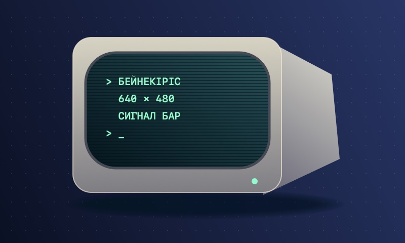

OLED и ЭЛТ
Пиксели OLED излучают собственный свет. В ЭЛТ электронный луч внутри вакуумной трубки заставляет люминофор на экране светиться.
OLED
Пиксели могут выключаться по отдельности, поэтому OLED показывает глубокий чёрный цвет. Обычно пиксели переключаются быстро. Если часто и подолгу показывать неподвижные элементы, неравномерный износ пикселей может оставить постоянный след изображения.
CRT
Электронная пушка создаёт луч. Отклоняющая система перемещает его по экрану, покрытому люминофором. Там, где попадают электроны, экран светится. Из-за трубки монитор получается громоздким и тяжёлым.
